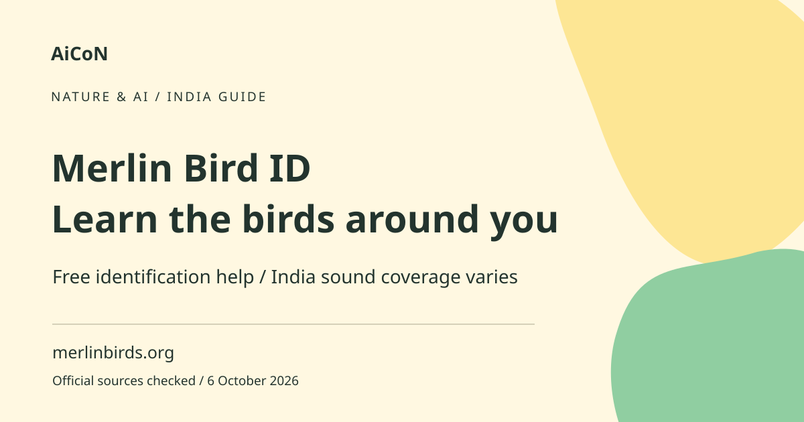

Merlin Bird ID in India: sound, photos and limits
Merlin Bird ID is a free Cornell Lab of Ornithology app that suggests birds from sounds, photos or a short description. India Sound ID coverage is partial. Treat every match as a suggestion to compare, not a confirmed sighting.

What does Merlin do?
The app offers several ways to explore birds. Sound ID listens and displays possible species. Photo ID uses a picture to suggest matches. The question-based route narrows choices using what you saw. A bird pack is a downloaded collection of identification material for a region. The Cornell Lab describes the app as a free guide supported by bird observations, photos and sounds.
What works in India?
The current official site says Sound ID supports some common birds in India, alongside broader coverage in other regions. It does not say every Indian bird is covered. Kerala has many habitats and species, so do not interpret an absent sound match as evidence that a bird was not present. The Android listing provides India bird-pack support, but individual feature and species coverage still differ.
How to get started, step by step
- Open the official Merlin site and follow the Cornell Lab app-store route. Confirm the publisher rather than installing a similarly named bird app.
- Install the app and follow its current account or access prompts. Download the relevant bird packs while you have a reliable connection and enough storage.
- For Sound ID, allow microphone access when you want to record. Stand quietly and record the birds without adding speech or playback sounds.
- Review the suggested species. Compare the actual recording with the app's reference songs and calls. Look for a visual match when possible.
- For Photo ID, use a clear photo you took or have permission to use. Enter the correct location and date, which help narrow the possible species.
- Read the candidate descriptions and compare shape, size, colour, habitat and other visible features. Do not pick a rare species just because it appears first.
- Save a bird to your list only when you are satisfied with the evidence. If uncertain, keep the photo or recording and ask a knowledgeable birder without calling it confirmed.
- Before an offline outing, test the downloaded material and features with your connection disabled. Keep a charged phone and do not depend on the app for navigation.
Free use and offline preparation
The official pages describe Merlin as free. Cornell says Sound ID and Photo ID work offline. Downloads and account-related features may still need a connection. Prepare the regional packs before going into an area without signal. Your mobile-data and storage costs are separate. Free offline identification does not imply every sync or list function works without internet.
Why a match can be wrong
Several birds can have similar calls, and background noise can confuse identification. A photo may hide size or distinguishing features. The app may suggest a species outside your exact situation. Location and date help but do not guarantee accuracy. An identification is stronger when sound, appearance and habitat agree. Do not use an AI suggestion alone to publish a rare-species claim.
Birdwatch responsibly
Keep a distance from birds and nests. Avoid disturbing wildlife to obtain a better recording or photo. Listen to reference calls privately rather than repeatedly playing them at wildlife. Follow local access rules and do not enter unsafe terrain while looking at the phone. Exact locations of sensitive wildlife can attract disturbance, so consider carefully before making them public.
Privacy and permissions
Sound recordings can capture nearby conversations. Photos can include people and location data. Review app permissions and what you save or share. Use the minimum access needed and ask before sharing someone else's photo. A saved personal list is different from publishing a public sighting record.
Frequently asked questions
Does Sound ID cover every bird in Kerala?
No. The official India sound coverage is partial.
Will it work without signal?
Cornell says Sound and Photo ID work offline. Prepare downloads and test your required features before travel.
Does a suggested match confirm my sighting?
No. Compare the evidence and seek help if uncertain.
Is it free?
The official app is described as free. Device, storage and data costs remain separate.
Official sources
Checked 6 October 2026. Expanded from an AiCoN short post delivered 6 October 2026. Portal screens and rules can change.